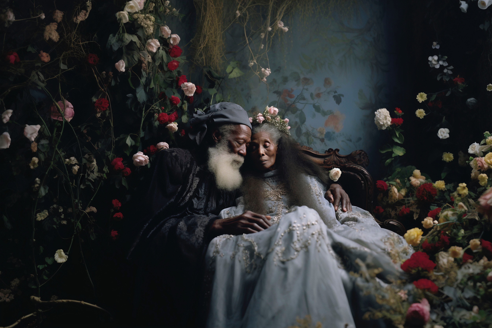
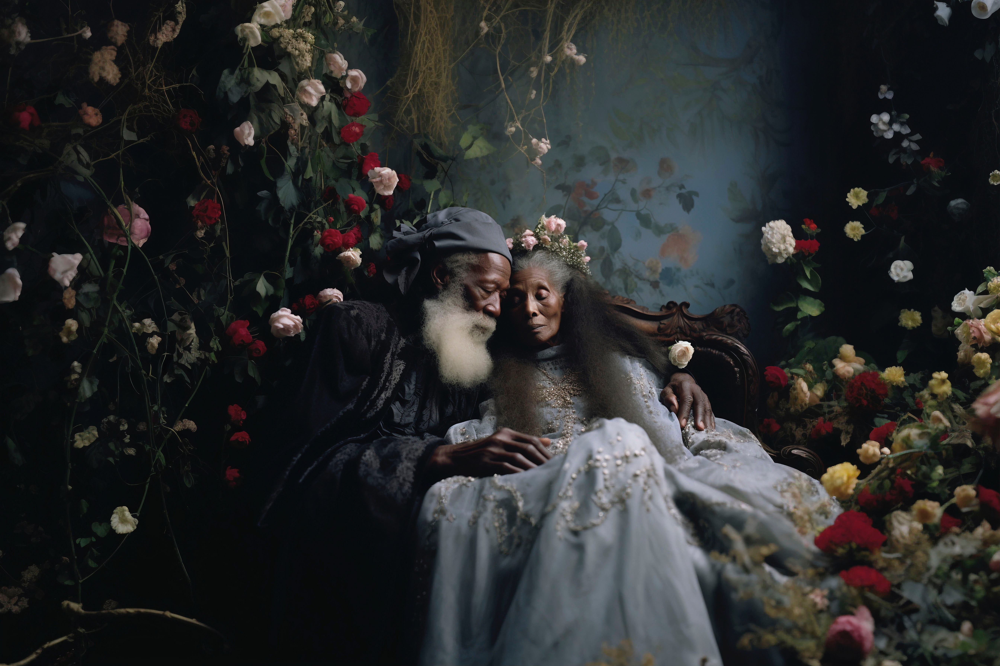

Capturing Nature, Moments & Stories
Dundee-based photographer specialising in nature, portraits, and events.
Explore My PortfolioMeet Jo
I'm Jo Smith, a passionate photographer born and raised in Dundee. With a love for natural light and storytelling, I capture the beauty of the outdoors as well as the emotions of special events and portraits.
Learn MoreFeatured Work

 

What Clients Say
"Jo captured our wedding beautifully – every shot told a story." – Sarah & Tom
"Her nature photography is simply breathtaking." – Local Magazine Editor
Let's Work Together
Looking for a photographer? Let’s talk!
Get in Touch